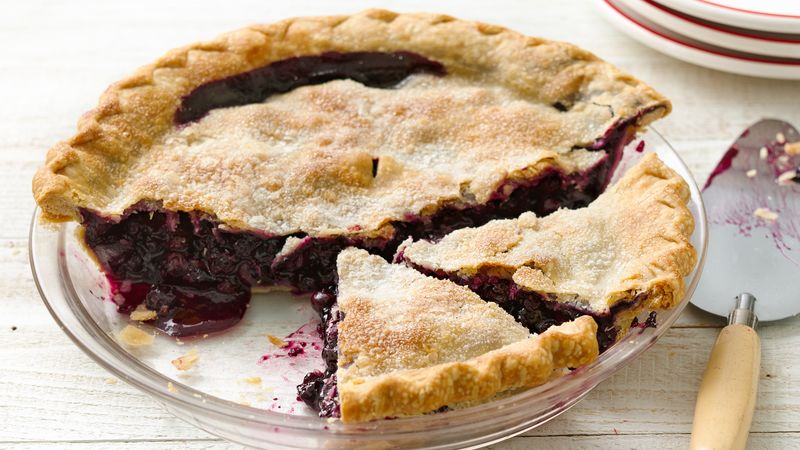

Momma's Blueberry Pie

One of my all time favourite desserts, my mom's homemade blueberry pie is sure to not last long in any household. This recipe can be used with fresh or frozen blueberries. If you're using berries from frozen, be sure that they are left to defrost in a mesh collander for a few hours to allow the excess juice to drain, otherwise you'll get very, very juicy filling
You can use either homemade dough, or you can buy frozen, premade shells from the store. If you want to be authentic to my mom's recipe, grab yourself a box of Tenderflake when it's on sale ;)
Ingredients:
Filling:
- 1 cup of sugar
- 1/4 cup of flour
- 1/4 tbs. of lemon juice
- 2 tbs. of butter
Pie Crust
- 1 box of two Tenderflake pie shells
Steps:
- Preheat your oven to 425 F.
- Combine the first 5 ingredients in a large bowl.
- Take one pastry shell out of the foil plate (save these, they're a great garbage bowl or good for holding prepped ingredients) and palce it into a pie dish.
- Pour the mixture into the pastry shell.
- Dot with the butter.
- Top with the second pie shell and crimp edges closed. Using a shapr knife, cut steam holes in the top.
- Put pie dish onto a second baking sheet to catch any drippings (It's a nightmare to try to clean up from the bottom of your oven... trust me on this one!)
- Bake for 40 miutes, or until crust is golden brown.